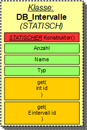
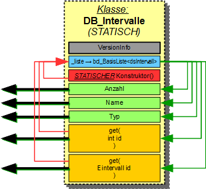

Klasse: DB_Intervalle
Diese Klasse ist eine (STATISCHE) Datenbank aller bekannten Intervalle. Sie kann also NICHT instanziiert werden.
|

|
öffentliche Schnittstellen:
Die Daten werden durch private Methoden in die Datenbank gespeichert. ------------------------------------------------------------- Ausgabe: |
|

|
Interne Struktur:Die VersionInfo kann nur durch eine spezielle Klasse angezeigt werden.
Die Daten werden durch private Methoden in die Datenbank gespeichert. |